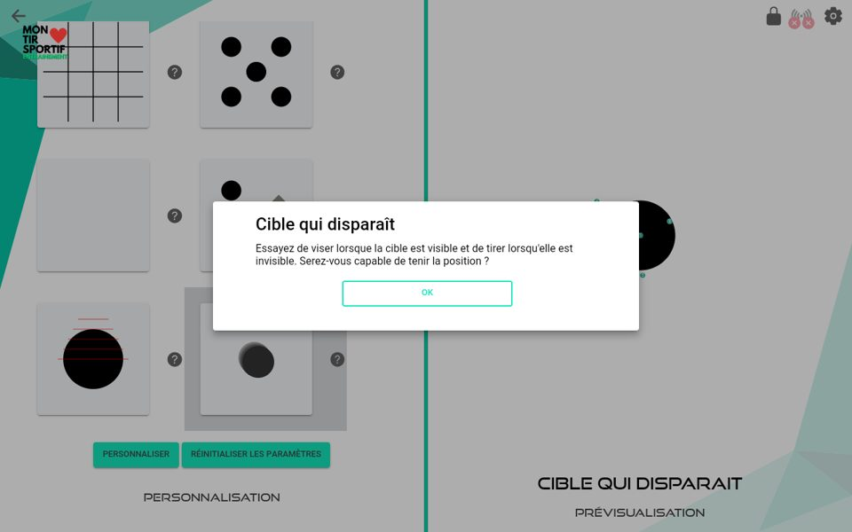

Les outils d'entraînement
Carton blanc, rond noir, bandes verticales et horizontales, cible qui disparaît : un visuel pour chaque point technique, avec des exercices prêts à l’emploi pour le tireur et l’entraîneur.
Le carton blanc
Sans visuel, pas de score à défendre : toute l'attention va au guidon et au doigt. Un carton blanc sans regarder le résultat, c'est l'équivalent du tir sur plaque.
L'échauffement en 3 temps
Échauffement 1 : le lâcher
Échauffement 1 : le lâcher (suite)
Échauffement 2 : lâcher et regard
Échauffements 2 et 3
Échauffement 3 : verrouillage du poignet
Échauffement 3 (suite)
Lâcher sans déstabiliser l'arme
Tireur assis, au plus près de sa position debout, arme posée sur un appui (repose-arme, sac…).
| Exercice | Objectif | Séries | Sur quoi se concentrer | Critère tireur | Critère entraîneur |
|---|---|---|---|---|---|
| 1 | Une pression continue et régulière | 2 × 10 plombs | Un doigt progressif qui ne dérange l’arme ni avant, ni pendant, ni après | Le guidon reste immobile dans le cran | La réaction de l’arme |
| 2 | Régulariser le lâcher continu | 2 × 10 plombs | Pas d’arrêt au point dur ; appuyer jusqu’à la butée en surveillant la visée | La visée reste stable au départ | La tenue après le coup et le groupement |
| 3 | Automatiser le lâcher continu | 3 × 10 plombs | Qualité du lâcher, stabilité, pression maintenue jusqu’à la butée | La visée ne bouge pas, même en butée | La tenue après le coup et le groupement |
Lâcher sans déstabiliser l’arme
La visée sur carton blanc (à sec)
Se concentrer sur le guidon
- Objectif
- Garder le guidon aligné dans le cran.
- Consigne
- Viser en pensant à l’alignement, tenir un temps donné, puis se reposer le même temps.
- Réussi si
- L’œil ne regarde que le guidon et l’attention reste sur son alignement.
| Couleur | Tenue / repos | Répétitions |
|---|---|---|
| Blanc Jaune | 5 s | ≈ 10 |
| Orange Vert | 10 s | ≈ 20 |
| Bleu Marron | 15 s | ≈ 20 |
Se concentrer sur le guidon
Revenir sur le guidon
- Objectif
- Ramener le regard sur le guidon.
- Consigne
- Viser, laisser le regard quitter le guidon 2 secondes, puis revenir et vérifier l’alignement.
- Réussi si
- L’œil refait la mise au point sur le guidon.
| Couleur | Répétitions |
|---|---|
| Blanc Jaune | ≈ 10 |
| Orange Vert | ≈ 20 |
| Bleu Marron | ≈ 30 |
Revenir sur le guidon
Stabilité et concentration
Tenir, puis allonger
- Objectif
- Gagner en stabilité et en endurance.
- Mise en place
- Assis, le bras posé sur un coussin.
- Consigne
- Aligner le guidon dans le cran et tenir quelques secondes avec la minuterie : 5 tenues de 10 secondes, puis allonger peu à peu.
- Réussi si
- Le lâcher ne fait pas bouger le guidon dans le cran.
Stabilité sur carton blanc
Stabilité et concentration
Allonger la tenue
Le rond noir (visuel non zoné)
Le visuel noir sans zones montre l'impact et le groupement, mais pas les points. On se rapproche du tir réel sans « faire un score ».
Analyser sa position et la qualité du geste à partir du groupement.
Plaque pour éveiller le lâcher, carton blanc pour la visée, rond noir pour la séquence complète.
Quelques tirs, lecture du groupement, clics, nouveau test : sans pression du score. Régler par clics
Mémoriser les organes de visée au départ du coup. L'annonce
Lâcher sur le rond noir
- Objectif
- Lâcher sans modifier la ligne de visée.
- Consigne
- Tirer sur le rond noir sans regarder le résultat, attention sur le guidon.
- Variantes
- A : 10 tirs, à balles ou à sec · B : 20 tirs en alternant réel et à sec · C : 30 tirs en alternant.
- Réussi si
- Le lâcher ne déplace pas le guidon dans le cran.
Carton blanc ou rond noir ?
- Objectif
- Repérer ce qui change entre les deux cibles.
- Consigne
- Alterner carton blanc et rond noir ; noter les différences de lâcher.
- Variantes
- Mêmes séries A, B, C.
- Réussi si
- Le tireur perçoit la différence entre carton blanc et visuel.
Lâcher sur visuel non zoné
La bande verticale (et les deux bandes)
Une bande noire verticale, ou une bande blanche entre deux bandes noires, isole l'axe gauche-droite. On règle la difficulté par la largeur de la bande : en général celle du guidon, plus large si le tireur bouge beaucoup. C'est le centre du guidon qui doit rester dans la bande, pas le guidon entier.
On y travaille : le verrouillage du poignet, l'équilibre (oscillations avant-arrière), une descente droite, un geste d'attaque rectiligne. Et, en second plan, le lâcher dans le mouvement : le tir immobile n'existe pas.
1. Verrouiller le poignet
- Pour qui
- Les tireurs qui maîtrisent déjà leur bougé.
- Consigne
- Ne penser qu’au centre du guidon, accepter le bougé, le garder dans la bande, puis lâcher. 10 tirs par série, en haute concentration.
- Réussi si
- Au lâcher, le centre du guidon est au centre du cran et dans la bande ; les impacts sont dans la bande.
| Couleur | Largeur de bande | Séries |
|---|---|---|
| Blanc Jaune | Plus large que le guidon | 2 |
| Orange Vert | Égale au guidon | 4 |
| Bleu Marron | Un peu plus étroite | 5 |
2. Sentir son équilibre
- Pour qui
- Un poignet déjà assez verrouillé.
- Consigne
- Monter le bras en passant dans la bande, pause en haut, redescendre dans la bande. 10 fois sans tirer, puis 3 × 10 tirs en lâchant à la hauteur choisie.
- Réussi si
- Le tireur ressent et observe ses oscillations par rapport à la bande. L’entraîneur peut filmer le profil depuis l’arrière.
| Couleur | Largeur de bande |
|---|---|
| Blanc Jaune | Plus large que le guidon |
| Orange Vert | Comparable au guidon |
| Bleu Marron | Plus étroite que le guidon |
3. Maîtriser la descente
- Vérifier sa position
- Monter au-dessus de la cible, pause (tassement), descendre vers la bande, 3 fois. Si la descente sort de l’axe, reprendre sa position, au besoin les yeux fermés.
- Descente en cible
- Descendre lentement dans la bande, centre du guidon dans le cran, lâcher à des hauteurs différentes, sans regarder la cible. 10 tirs par série.
- Réussi si
- La descente est lente et maîtrisée ; les impacts sont dans la bande.
| Couleur | Largeur de bande | Séries |
|---|---|---|
| Blanc Jaune | Plus large que le guidon | 2 |
| Orange Vert | Égale au guidon | 4 |
| Bleu Marron | Un peu plus étroite | 4 |
4. Le geste d’attaque
- Montée sans tir
- Bras à 45°, pause, puis montée dans la bande. 10 gestes par série.
- Montée et lâcher
- Même geste en appuyant sur la détente pendant la montée, puis lâcher. 10 tirs par série.
- Réussi si
- Le centre du guidon monte dans la bande ; l’impact est dans la bande.
| Couleur | Montée sans tir | Montée et lâcher |
|---|---|---|
| Blanc Jaune | 3 séries, montée dans la bande | 3 séries, geste lent |
| Orange Vert | 5 séries, vitesse maîtrisée | 3 séries, geste maîtrisé sans être lent |
| Bleu Marron | 5 séries, maîtrisée et assez rapide | 5 séries, geste performant |
La bande horizontale
Ici, c'est l'axe haut-bas qui est isolé. Deux rappels : on regarde le guidon, pas la cible ; et on choisit une bande proche de la hauteur de la zone du 7 (59,6 mm) pour travailler en conditions réelles.
La marge de blanc
- Objectif
- Évaluer sa marge de blanc sans la regarder.
- Consigne
- Faire sa séquence normalement, regard sur le guidon, et juger la marge à la luminosité.
- Réussi si
- Les impacts tombent dans la bande, à la hauteur de la marge choisie.
L’œil sur le guidon
- Objectif
- Rester concentré sur le guidon.
- Consigne
- Agrandir ou réduire volontairement la marge de blanc pendant la séquence, sans quitter le guidon des yeux.
- Réussi si
- Les impacts montent ou descendent dans le sens du changement de marge.
Pour aller plus loin : tirer dans une bande blanche entre deux noires comme si elle était noire ; réduire la bande pour obliger à adapter la marge ; s'adapter aux changements de lumière.
Coordination et cible qui disparaît
Dans la SQ Air, l'écran des outils d'entraînement présente six vignettes : on touche celle de l'outil voulu, on le règle avec « Personnaliser », puis on lance avec « Démarrer ». À droite, la prévisualisation montre les impacts numérotés.
La coordination


La cible qui disparaît


Tenir sans voir
- Principe
- La cible s’affiche puis s’efface : on vise pendant qu’elle est visible, et on tire une fois qu’elle a disparu.
- Ce qu’on travaille
- Tenir sa position et sa visée sans le repère du visuel ; faire confiance à sa tenue plutôt qu’à la cible.
- Réussi si
- Les impacts restent groupés sur l’emplacement de la cible, même tirés « à l’aveugle ».
MonTirSportif – https://sq.montirsportif.com/outils-entrainement.html